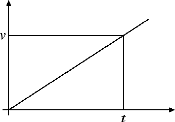
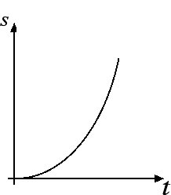

Cinematica
Moto rettilineo uniformemente accelerato
Un altro esempio molto importante di moto è il moto rettilineo uniformemente accelerato, caratterizzato da una traiettoria rettilinea e da un'accelerazione costante. Questo significa che in un moto rettilineo uniformemente accelerato l'accelerazione a non varia nel tempo. Se ora ci ricordiamo com'è definita l'accelerazione, a = (v - v0) / (t - t0), possiamo dire che in un moto rettilineo uniformemente accelerato il rapporto tra la variazione di velocità v - v0 e l'intervallo di tempo t - t0 è uguale a una costante. Questo vuol dire che la variazione di velocità e l'intervallo di tempo in cui tale variazione avviene sono direttamente proporzionali: v - v0 = a · (t - t0).
Come caso particolare, supponiamo di far partire il cronometro all'istante t0 = 0 e che in quell'istante il corpo risulti fermo v0 = 0. In questo caso la velocità istantanea del corpo v e il tempo t risultano direttamente proporzionali: v = a · t e il grafico è la retta passante per l'origine riportata in figura:

Evidentemente all'aumentare dell'accelerazione del corpo, aumenterà anche la pendenza del grafico velocità-tempo.
Andiamo ora a ricavarci la legge oraria del moto rettilineo uniformemente accelerato. Come abbiamo detto nella precedente sezione lo spazio s percorso dal corpo è dato dall'area del triangolo che ha per base il tempo t e per altezza la velocità v raggiunta dal corpo all'istante t. Sostituendo ora la formula v = a · t, nella legge oraria del moto uniformemente accelerato otteniamo che s = 1/2 · v · t = 1/2 · a · t2. Se nel moto rettilineo uniforme lo spazio percorso è direttamente proporzionale al tempo t, nel moto rettilineo uniformemente accelerato lo spazio è direttamente proporzionale al quadrato del tempo.

Ad esempio, se l'accelerazione costante è uguale a 2 m / s2 abbiamo che la legge oraria diventa s = t2, rappresentata nella seguente tabella:
| t (s) | 0 | 1 | 2 | 3 | 4 |
| s (m) | 0 | 1 | 4 | 9 | 16 |